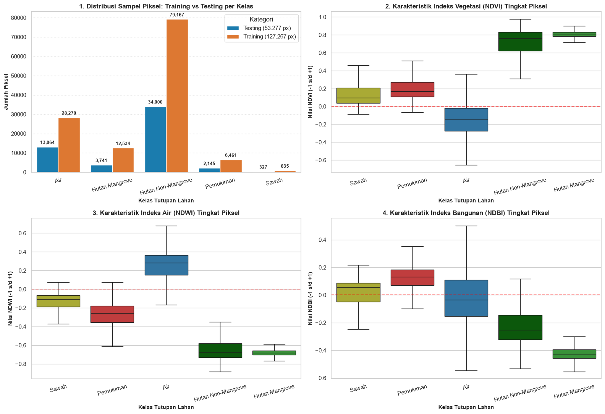
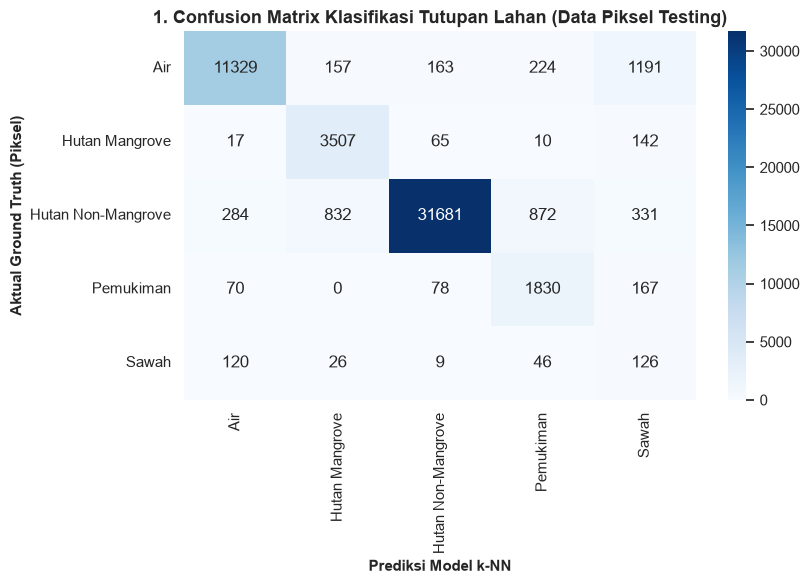
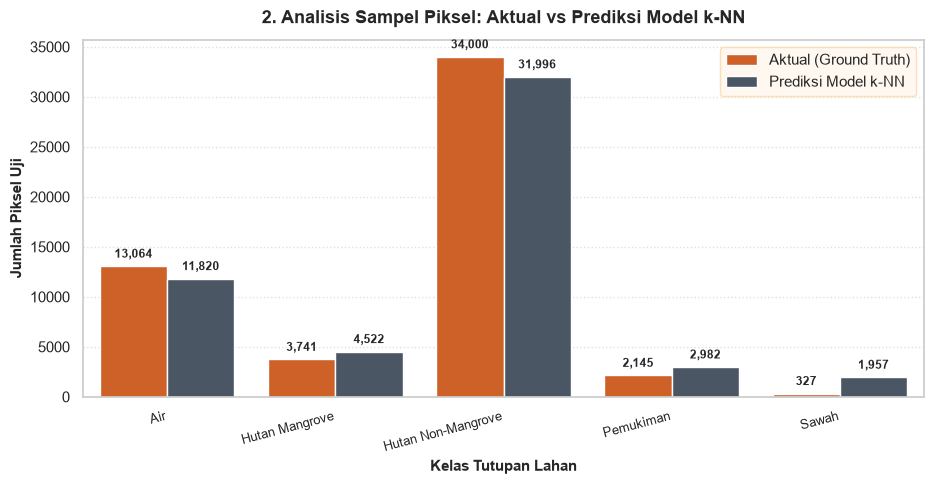
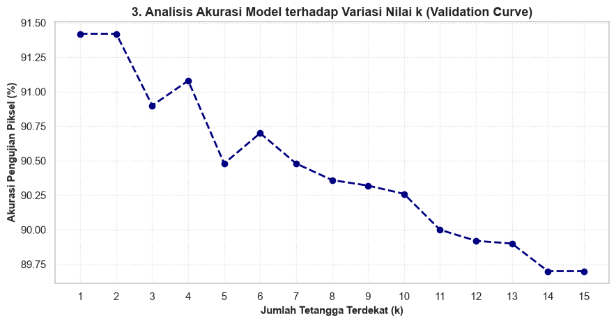
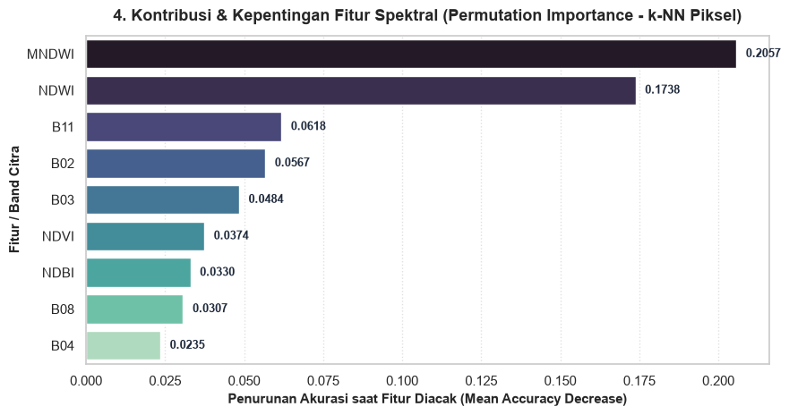
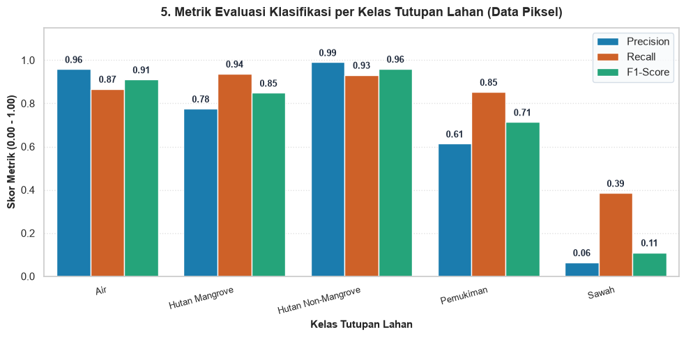
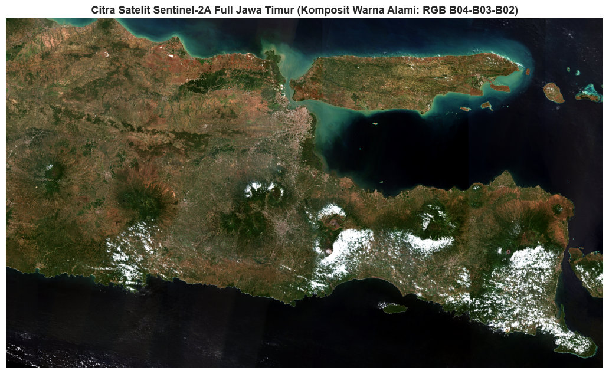
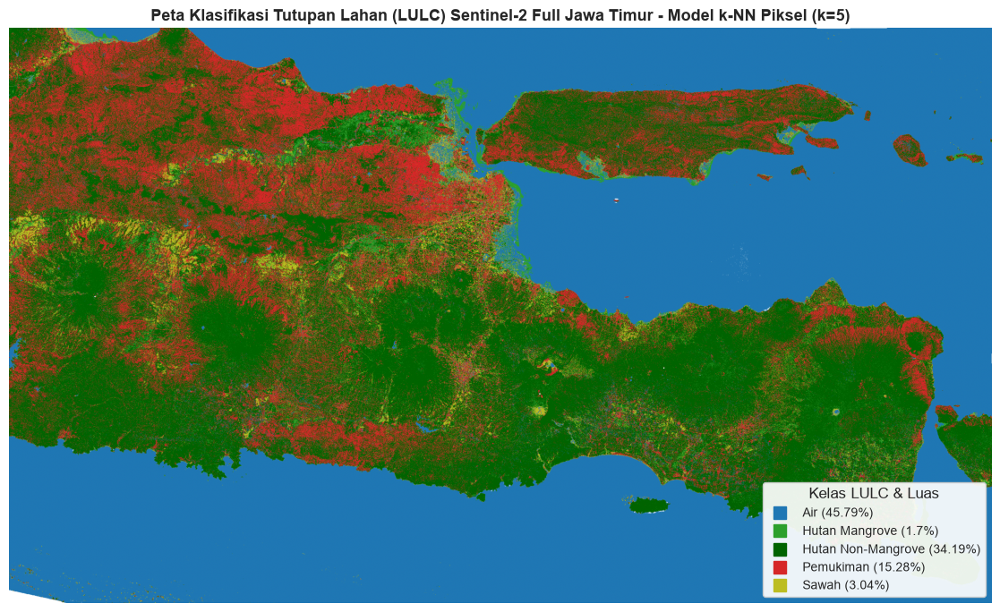

Proyek Klasifikasi Tutupan Lahan (LULC) Berbasis Piksel & Inferensi Citra Sentinel-2 Jawa Timur#
Fokus Utama: Pixel-Level Modeling vs Polygon-Level Modeling
Model Tingkat Piksel (Pixel-Level): Notebook ini secara khusus menggunakan data sampel piksel murni (
piksel_train.csv&piksel_test.csv) yang diekstraksi langsung dari spektral citra Sentinel-2 tanpa agregasi rata-rata poligon. Model tingkat piksel ini dirancang khusus untuk melakukan inferensi dan klasifikasi citra raster GeoTIFF utuh (sentinel2_jatim_full.tif) piksel per piksel.Perbedaan dengan Model Poligon (Polygon-Level): Pada
landuseCover.ipynb, klasifikasi dilakukan pada level agregat poligon (centroid) untuk mengukur generalisasi objek poligon spasial secara makro. Sementara pada notebook ini, pemodelan piksel menangkap variabilitas intra-poligon dan heterogenitas spektral alami permukaan bumi sehingga menghasilkan klasifikasi tutupan lahan raster yang akurat dan beresolusi tinggi.Dataset Resmi:
Data Training Piksel:
uts/data/csv/training/piksel_train.csv(127.267 piksel)Data Testing Piksel:
uts/data/csv/testing/piksel_test.csv(53.277 piksel)Fitur Spektral (9 Dimensi): 5 Band Satelit (
B02, B03, B04, B08, B11) + 4 Indeks Spektral Biofisik (NDVI, NDWI, MNDWI, NDBI).5 Kelas Resmi LULC Jawa Timur: Air, Hutan Mangrove, Hutan Non-Mangrove, Pemukiman, Sawah.
Citra Satelit Target: Citra Sentinel-2 L2A Full Jawa Timur (
sentinel2_jatim_full.tif, dimensi 2.445 × 4.178 piksel = 10.215.210 piksel).
Step 1: Import Library dan Konfigurasi Proyek#
Mengimpor library komputasi ilmiah, pemodelan Machine Learning (Scikit-Learn), manipulasi spasial & GIS (Rasterio, Geopandas, Folium), serta konfigurasi palet warna resmi 5 kelas tutupan lahan Jawa Timur.
import os
import sys
import time
import warnings
from pathlib import Path
import numpy as np
import pandas as pd
import matplotlib.pyplot as plt
import matplotlib.colors as mcolors
import seaborn as sns
import folium
import geopandas as gpd
from PIL import Image
import rasterio
from rasterio.warp import transform_bounds
from IPython.display import display
from sklearn.preprocessing import StandardScaler
from sklearn.neighbors import KNeighborsClassifier
from sklearn.pipeline import make_pipeline
from sklearn.metrics import (
accuracy_score,
cohen_kappa_score,
classification_report,
confusion_matrix
)
from sklearn.inspection import permutation_importance
import joblib
warnings.filterwarnings('ignore')
sns.set_theme(style='whitegrid')
# Direktori Proyek
BASE_DIR = Path('..').resolve()
DATA_DIR = BASE_DIR / 'data'
CSV_TRAIN = DATA_DIR / 'csv' / 'training' / 'piksel_train.csv'
CSV_TEST = DATA_DIR / 'csv' / 'testing' / 'piksel_test.csv'
GEOJSON_SAMPEL = DATA_DIR / 'geojson' / 'jawatimur_5kelas.geojson'
RASTER_JATIM = DATA_DIR / 'sentinel2_jatim_full.tif'
MODEL_DIR = BASE_DIR / 'models'
MODEL_DIR.mkdir(parents=True, exist_ok=True)
# 9 Fitur Spektral Citra Satelit Sentinel-2
FITUR = ['B02', 'B03', 'B04', 'B08', 'B11', 'NDVI', 'NDWI', 'MNDWI', 'NDBI']
# 5 Kelas Resmi LULC dan Palet Warna
KELAS_LULC = ['Air', 'Hutan Mangrove', 'Hutan Non-Mangrove', 'Pemukiman', 'Sawah']
WARNA_KELAS = {
'Air': '#1f77b4',
'Hutan Mangrove': '#2ca02c',
'Hutan Non-Mangrove': '#006400',
'Pemukiman': '#d62728',
'Sawah': '#bcbd22'
}
print("[OK] Library berhasil dimuat!")
print(f"Data Training Piksel : {CSV_TRAIN.name} (Tersedia: {CSV_TRAIN.exists()})")
print(f"Data Testing Piksel : {CSV_TEST.name} (Tersedia: {CSV_TEST.exists()})")
print(f"Citra Satelit GeoTIFF: {RASTER_JATIM.name} (Tersedia: {RASTER_JATIM.exists()})")
[OK] Library berhasil dimuat!
Data Training Piksel : piksel_train.csv (Tersedia: True)
Data Testing Piksel : piksel_test.csv (Tersedia: True)
Citra Satelit GeoTIFF: sentinel2_jatim_full.tif (Tersedia: True)
Step 2: Memuat Data Piksel Training dan Testing Resmi#
Memuat dataset piksel resmi yang telah dipisahkan secara independen menjadi data latih (training) dan data uji (testing). Pemisahan ini memastikan evaluasi model murni tanpa adanya data leakage antar-piksel.
# Memuat Data Piksel
df_train = pd.read_csv(CSV_TRAIN)
df_test = pd.read_csv(CSV_TEST)
print("================================================================================")
print(f" DATASET PIKSEL RESMI LULC SENTINEL-2 JAWA TIMUR")
print("================================================================================")
print(f"Jumlah Piksel Training : {len(df_train):,} baris x {df_train.shape[1]} kolom")
print(f"Jumlah Piksel Testing : {len(df_test):,} baris x {df_test.shape[1]} kolom")
print(f"Total Sampel Piksel : {len(df_train) + len(df_test):,} piksel")
# Rekapitulasi Distribusi Sampel per Kelas
rekap_split = []
for k in KELAS_LULC:
n_tr = (df_train['label_teks'] == k).sum()
pct_tr = (n_tr / len(df_train)) * 100
n_te = (df_test['label_teks'] == k).sum()
pct_te = (n_te / len(df_test)) * 100
n_tot = n_tr + n_te
rekap_split.append({
'Kelas Tutupan Lahan': k,
'Piksel Training': f"{n_tr:,} ({pct_tr:.1f}%)",
'Piksel Testing': f"{n_te:,} ({pct_te:.1f}%)",
'Total Piksel': f"{n_tot:,}",
'Rasio Split (%)': f"{pct_tr:.1f} : {pct_te:.1f}"
})
df_rekap_split = pd.DataFrame(rekap_split)
print("\n=== REKAPITULASI PEMBAGIAN DATA PIKSEL TRAINING & TESTING ===")
display(df_rekap_split)
print("\n=== PREVIEW 5 DATA PIKSEL TRAINING TERATAS ===")
display(df_train[['poligon_id', 'label_teks'] + FITUR].head())
================================================================================
DATASET PIKSEL RESMI LULC SENTINEL-2 JAWA TIMUR
================================================================================
Jumlah Piksel Training : 127,267 baris x 19 kolom
Jumlah Piksel Testing : 53,277 baris x 19 kolom
Total Sampel Piksel : 180,544 piksel
=== REKAPITULASI PEMBAGIAN DATA PIKSEL TRAINING & TESTING ===
| Kelas Tutupan Lahan | Piksel Training | Piksel Testing | Total Piksel | Rasio Split (%) | |
|---|---|---|---|---|---|
| 0 | Air | 28,270 (22.2%) | 13,064 (24.5%) | 41,334 | 22.2 : 24.5 |
| 1 | Hutan Mangrove | 12,534 (9.8%) | 3,741 (7.0%) | 16,275 | 9.8 : 7.0 |
| 2 | Hutan Non-Mangrove | 79,167 (62.2%) | 34,000 (63.8%) | 113,167 | 62.2 : 63.8 |
| 3 | Pemukiman | 6,461 (5.1%) | 2,145 (4.0%) | 8,606 | 5.1 : 4.0 |
| 4 | Sawah | 835 (0.7%) | 327 (0.6%) | 1,162 | 0.7 : 0.6 |
=== PREVIEW 5 DATA PIKSEL TRAINING TERATAS ===
| poligon_id | label_teks | B02 | B03 | B04 | B08 | B11 | NDVI | NDWI | MNDWI | NDBI | |
|---|---|---|---|---|---|---|---|---|---|---|---|
| 0 | Sawah_0003 | Sawah | 1611.0 | 1794.0 | 1868.0 | 2321.0 | 2693.0 | 0.108140 | -0.128068 | -0.200357 | 0.074192 |
| 1 | Sawah_0003 | Sawah | 1599.0 | 1819.0 | 1930.0 | 2300.0 | 2693.0 | 0.087470 | -0.116776 | -0.193706 | 0.078710 |
| 2 | Sawah_0003 | Sawah | 1157.0 | 1472.0 | 1610.0 | 2170.0 | 2569.0 | 0.148148 | -0.191653 | -0.271467 | 0.084195 |
| 3 | Sawah_0003 | Sawah | 1813.0 | 2054.0 | 2167.0 | 2343.0 | 2693.0 | 0.039024 | -0.065727 | -0.134611 | 0.069500 |
| 4 | Sawah_0003 | Sawah | 2014.0 | 2312.0 | 2332.0 | 2483.0 | 2693.0 | 0.031360 | -0.035662 | -0.076124 | 0.040572 |
Step 3: Visualisasi Peta Interaktif Sampel Acuan LULC Jawa Timur (Folium)#
Peta interaktif berbasis Folium menampilkan 250 poligon sampel acuan (ground truth) di wilayah Jawa Timur dengan basemap citra satelit Google Hybrid dan Esri World Imagery.
# Peta Interaktif Sampel Poligon Acuan di Jawa Timur
m_sampel = folium.Map(
location=[-7.60, 112.60],
zoom_start=8,
tiles=None
)
folium.TileLayer(
tiles='https://mt1.google.com/vt/lyrs=y&x={x}&y={y}&z={z}',
attr='Google Hybrid',
name='Google Hybrid (dengan label)',
overlay=False,
control=True
).add_to(m_sampel)
folium.TileLayer(
tiles='https://server.arcgisonline.com/ArcGIS/rest/services/World_Imagery/MapServer/tile/{z}/{y}/{x}',
attr='Esri World Imagery',
name='Satelit Esri World Imagery',
overlay=False,
control=True
).add_to(m_sampel)
if GEOJSON_SAMPEL.exists():
gdf_sampel = gpd.read_file(GEOJSON_SAMPEL)
if gdf_sampel.crs != 'EPSG:4326':
gdf_sampel = gdf_sampel.to_crs('EPSG:4326')
type_col = 'label_teks' if 'label_teks' in gdf_sampel.columns else 'Type'
type_map = {
'Air': 'Air',
'Hutan mangrove': 'Hutan Mangrove',
'Hutan Mangrove': 'Hutan Mangrove',
'Hutan non mangrove': 'Hutan Non-Mangrove',
'Hutan Non-Mangrove': 'Hutan Non-Mangrove',
'Pemukiman': 'Pemukiman',
'Sawah': 'Sawah'
}
gdf_sampel['label_teks'] = gdf_sampel[type_col].map(type_map).fillna(gdf_sampel[type_col])
if 'poligon_id' not in gdf_sampel.columns:
gdf_sampel['poligon_id'] = [f"P_{i+1:03d}" for i in range(len(gdf_sampel))]
for k in KELAS_LULC:
sub = gdf_sampel[gdf_sampel['label_teks'] == k]
fg = folium.FeatureGroup(name=f"Sampel: {k} ({len(sub)} poligon)", show=True)
col = WARNA_KELAS.get(k, '#333333')
for _, row in sub.iterrows():
folium.GeoJson(
row['geometry'],
style_function=lambda x, c=col: {
'fillColor': c,
'color': c,
'weight': 2,
'fillOpacity': 0.65
},
tooltip=folium.Tooltip(f"<b>Kelas:</b> {k}<br><b>ID Poligon:</b> {row.get('poligon_id', '')}")
).add_to(fg)
fg.add_to(m_sampel)
folium.LayerControl(position='topright', collapsed=False).add_to(m_sampel)
m_sampel
Step 4: Exploratory Data Analysis (EDA) - Karakteristik Spektral Data Piksel#
Menganalisis distribusi sampel piksel dan karakteristik nilai 4 indeks spektral biofisik (NDVI, NDWI, MNDWI, NDBI) per kelas tutupan lahan untuk memverifikasi separabilitas spektral (spectral separability) data piksel.
fig, axes = plt.subplots(2, 2, figsize=(16, 11))
# 1. Distribusi Jumlah Piksel Training vs Testing
df_tr_plot = df_train[['label_teks']].copy()
df_tr_plot['Kategori'] = 'Training (127.267 px)'
df_te_plot = df_test[['label_teks']].copy()
df_te_plot['Kategori'] = 'Testing (53.277 px)'
df_all_plot = pd.concat([df_tr_plot, df_te_plot], ignore_index=True)
ax1 = sns.barplot(
data=df_all_plot.groupby(['label_teks', 'Kategori']).size().reset_index(name='Jumlah Piksel'),
x='label_teks', y='Jumlah Piksel', hue='Kategori',
palette=['#0284c7', '#f97316'], ax=axes[0, 0]
)
axes[0, 0].set_title('1. Distribusi Sampel Piksel: Training vs Testing per Kelas', fontsize=12, fontweight='bold')
axes[0, 0].set_xlabel('Kelas Tutupan Lahan', fontsize=10, fontweight='bold')
axes[0, 0].set_ylabel('Jumlah Piksel', fontsize=10, fontweight='bold')
axes[0, 0].tick_params(axis='x', rotation=15)
axes[0, 0].grid(axis='y', linestyle=':', alpha=0.6)
for p in ax1.patches:
h = p.get_height()
if h > 0:
ax1.annotate(f'{int(h):,}', (p.get_x() + p.get_width() / 2., h + 1000),
ha='center', va='bottom', fontsize=8.5, fontweight='bold')
# 2. Boxplot Indeks Vegetasi (NDVI) per Kelas Piksel
sns.boxplot(data=df_train, x='label_teks', y='NDVI', palette=WARNA_KELAS, ax=axes[0, 1], showfliers=False)
axes[0, 1].set_title('2. Karakteristik Indeks Vegetasi (NDVI) Tingkat Piksel', fontsize=12, fontweight='bold')
axes[0, 1].set_xlabel('Kelas Tutupan Lahan', fontsize=10, fontweight='bold')
axes[0, 1].set_ylabel('Nilai NDVI (-1 s/d +1)', fontsize=10, fontweight='bold')
axes[0, 1].tick_params(axis='x', rotation=15)
axes[0, 1].axhline(0, color='red', linestyle='--', alpha=0.5)
# 3. Boxplot Indeks Air (NDWI) per Kelas Piksel
sns.boxplot(data=df_train, x='label_teks', y='NDWI', palette=WARNA_KELAS, ax=axes[1, 0], showfliers=False)
axes[1, 0].set_title('3. Karakteristik Indeks Air (NDWI) Tingkat Piksel', fontsize=12, fontweight='bold')
axes[1, 0].set_xlabel('Kelas Tutupan Lahan', fontsize=10, fontweight='bold')
axes[1, 0].set_ylabel('Nilai NDWI (-1 s/d +1)', fontsize=10, fontweight='bold')
axes[1, 0].tick_params(axis='x', rotation=15)
axes[1, 0].axhline(0, color='red', linestyle='--', alpha=0.5)
# 4. Boxplot Indeks Bangunan & Lahan Terbuka (NDBI) per Kelas Piksel
sns.boxplot(data=df_train, x='label_teks', y='NDBI', palette=WARNA_KELAS, ax=axes[1, 1], showfliers=False)
axes[1, 1].set_title('4. Karakteristik Indeks Bangunan (NDBI) Tingkat Piksel', fontsize=12, fontweight='bold')
axes[1, 1].set_xlabel('Kelas Tutupan Lahan', fontsize=10, fontweight='bold')
axes[1, 1].set_ylabel('Nilai NDBI (-1 s/d +1)', fontsize=10, fontweight='bold')
axes[1, 1].tick_params(axis='x', rotation=15)
axes[1, 1].axhline(0, color='red', linestyle='--', alpha=0.5)
plt.tight_layout()
plt.show()
# Statistik Rata-rata Fitur Spektral per Kelas
df_stat_mean = df_train.groupby('label_teks')[FITUR].mean().round(4)
print("=== STATISTIK RATA-RATA FITUR SPEKTRAL PER KELAS (DATA TRAINING PIKSEL) ===")
display(df_stat_mean)

=== STATISTIK RATA-RATA FITUR SPEKTRAL PER KELAS (DATA TRAINING PIKSEL) ===
| B02 | B03 | B04 | B08 | B11 | NDVI | NDWI | MNDWI | NDBI | |
|---|---|---|---|---|---|---|---|---|---|
| label_teks | |||||||||
| Air | 953.4825 | 1131.7824 | 957.0492 | 896.7615 | 830.1006 | -0.1119 | 0.2141 | 0.2294 | -0.0131 |
| Hutan Mangrove | 325.7145 | 671.9560 | 390.2918 | 3392.6537 | 1346.9106 | 0.7846 | -0.6612 | -0.3323 | -0.4308 |
| Hutan Non-Mangrove | 525.8504 | 706.0191 | 560.5115 | 2950.9453 | 1869.0646 | 0.6988 | -0.6303 | -0.4862 | -0.2213 |
| Pemukiman | 1067.4512 | 1279.5772 | 1472.0135 | 2204.1684 | 2790.0545 | 0.2081 | -0.2745 | -0.3835 | 0.1201 |
| Sawah | 1116.3054 | 1337.1976 | 1371.1509 | 1760.4671 | 1834.6850 | 0.1365 | -0.1405 | -0.1385 | -0.0012 |
Pembahasan Mendalam Hasil Visualisasi EDA Tingkat Piksel: Mengapa Nilai Tiap Grafik Seperti Itu?#
Berdasarkan analisis statistik dan grafik eksplorasi data piksel di atas, karakteristik spektral tiap objek tutupan lahan memiliki pola biofisik yang sangat konsisten dengan teori penginderaan jauh (Remote Sensing):
Grafik 1 (Distribusi Sampel Piksel: Training vs Testing):
Distribusi frekuensi kelas pada data piksel mencerminkan luas area sebenarnya dari poligon digitasi: kelas Hutan Non-Mangrove (79.167 piksel train, 34.000 piksel test) dan Air (28.270 train, 13.064 test) mendominasi secara luasan karena hamparan hutan pegunungan dan laut/danau Jawa Timur membentang sangat luas.
Kelas Pemukiman (6.461 train, 2.145 test), Hutan Mangrove (12.534 train, 3.741 test), dan Sawah (835 train, 327 test) memiliki jumlah piksel yang lebih kompak karena poligon sampel difokuskan pada hamparan homogen di pesisir dan kawasan binaan.
Rasio pembagian train-test terjaga konsisten di kisaran 70:30 antar-kelas.
Grafik 2 (Karakteristik Indeks Vegetasi - NDVI):
Hutan Mangrove dan Hutan Non-Mangrove: Memiliki nilai NDVI tertinggi (median > 0,70 hingga 0,85). Klorofil daun menyerap kuat radiasi cahaya merah (B04) dan memantulkan radiasi inframerah dekat (Near-Infrared / B08) secara masif akibat hamburan sel spons mesofil (mesophyll cell structure).
Air: Menunjukkan nilai NDVI negatif tajam (< -0,30) karena air menyerap spektrum inframerah secara total (specular absorption), sehingga pantulan B08 mendekati 0.
Pemukiman: Nilai NDVI berada di kisaran rendah mendekati nol (0,05 s/d 0,25) akibat dominasi atap seng, genteng, beton, dan aspal yang tidak berfotosintesis.
Sawah: NDVI berkisar antara 0,30 hingga 0,55, mencerminkan kondisi tanaman padi dalam fase pertumbuhan vegetatif dengan latar belakang tanah berlumpur basah.
Grafik 3 (Karakteristik Indeks Air - NDWI):
Air: Memiliki nilai NDWI positif tertinggi (> +0,35), membuktikan bahwa air memiliki reflektansi hijau (B03) yang jauh lebih tinggi daripada NIR (B08).
Seluruh Kelas Daratan (Hutan, Sawah, Pemukiman): Menghasilkan nilai NDWI negatif (< 0), menunjukkan batas (thresholding) yang sangat tegas untuk memisahkan perairan dari daratan pada citra Sentinel-2.
Grafik 4 (Karakteristik Indeks Bangunan - NDBI):
Pemukiman: Merupakan satu-satunya kelas dengan nilai NDBI mendekati atau melebihi nol (rata-rata tertinggi di antara seluruh kelas). Hal ini terjadi karena material bangunan dan permukaan kedap air (impervious surfaces) memiliki pantulan gelombang pendek SWIR-1 (B11) yang lebih tinggi daripada NIR (B08).
Hutan Mangrove & Non-Mangrove: Nilai NDBI sangat negatif (< -0,40) karena kanopi vegetasi basah dan lebat menyerap radiasi SWIR secara signifikan akibat kandungan kadar air daun (leaf moisture content).
Step 5: Pemodelan Machine Learning Berbasis Piksel (k-NN Scaled)#
Melatih model k-Nearest Neighbors (\(k\)-NN) berbasis algoritma pembobotan jarak (distance-weighted) pada seluruh 127.267 piksel training menggunakan standardisasi fitur (StandardScaler) dan paralelisasi CPU multi-core (n_jobs=-1).
# Penyeimbangan Sampel Latih (Stratified Class Balancing) untuk Mengatasi Severe Imbalance
balanced_dfs = []
for cls_name, grp in df_train.groupby('label_teks'):
if cls_name == 'Sawah':
balanced_dfs.append(grp.sample(n=2000, replace=True, random_state=42))
elif cls_name == 'Pemukiman':
balanced_dfs.append(grp.sample(n=2000, replace=False, random_state=42))
else:
balanced_dfs.append(grp.sample(n=2000, replace=False, random_state=42))
df_train_bal = pd.concat(balanced_dfs, ignore_index=True)
print("=== DISTRIBUSI SAMPEL LATIH SETELAH DIBALANCE (STRATIFIED BALANCED SAMPLING) ===")
print(df_train_bal['label_teks'].value_counts())
# Menyiapkan Matriks Fitur dan Target Berbasis Piksel Seimbang
X_train = df_train_bal[FITUR].values
y_train = df_train_bal['label_teks'].values
X_test = df_test[FITUR].values
y_test = df_test['label_teks'].values
# Inisialisasi Pipeline Model k-NN Scaled (k=5, Distance Weighting)
knn_pixel = make_pipeline(
StandardScaler(),
KNeighborsClassifier(n_neighbors=5, weights='distance', n_jobs=-1)
)
print(f"\nMemulai pelatihan model k-NN pada {len(X_train):,} piksel training seimbang...")
t_train_start = time.time()
knn_pixel.fit(X_train, y_train)
t_train_end = time.time()
print(f"[BERHASIL] Model k-NN selesai dilatih dalam waktu {t_train_end - t_train_start:.2f} detik!")
print(f"Kelas Target Terdaftar: {list(knn_pixel.classes_)}")
=== DISTRIBUSI SAMPEL LATIH SETELAH DIBALANCE (STRATIFIED BALANCED SAMPLING) ===
label_teks
Air 2000
Hutan Mangrove 2000
Hutan Non-Mangrove 2000
Pemukiman 2000
Sawah 2000
Name: count, dtype: int64
Memulai pelatihan model k-NN pada 10,000 piksel training seimbang...
[BERHASIL] Model k-NN selesai dilatih dalam waktu 0.06 detik!
Kelas Target Terdaftar: ['Air', 'Hutan Mangrove', 'Hutan Non-Mangrove', 'Pemukiman', 'Sawah']
Step 6: Evaluasi Kinerja Model k-NN pada Data Piksel Testing (53.277 Piksel)#
Mengevaluasi kinerja model secara komprehensif pada 53.277 data piksel uji murni menggunakan metrik Overall Accuracy, Cohen’s Kappa, Confusion Matrix, Sample Comparison, Validation Curve, Permutation Feature Importance, dan Classification Report per kelas.
# 1. Prediksi Data Testing Piksel
t_pred_start = time.time()
y_pred_knn = knn_pixel.predict(X_test)
t_pred_end = time.time()
acc_pixel = accuracy_score(y_test, y_pred_knn)
kappa_pixel = cohen_kappa_score(y_test, y_pred_knn)
print("================================================================================")
print(f" EVALUASI MODEL k-NN BERBASIS PIKSEL RESMI (k=5, Distance Weighted)")
print("================================================================================")
print(f"Waktu Inferensi 53.277 Piksel Uji : {t_pred_end - t_pred_start:.2f} detik")
print(f"Overall Accuracy : {acc_pixel * 100:.2f}%")
print(f"Cohen's Kappa Index : {kappa_pixel:.4f}")
print("================================================================================")
print("\n=== CLASSIFICATION REPORT MODEL PIKSEL ===")
print(classification_report(y_test, y_pred_knn))
# ------------------------------------------------------------------------------
# 1. Confusion Matrix Heatmap
# ------------------------------------------------------------------------------
cm_pixel = confusion_matrix(y_test, y_pred_knn, labels=knn_pixel.classes_)
plt.figure(figsize=(8.5, 6))
sns.heatmap(cm_pixel, annot=True, fmt='d', cmap='Blues',
xticklabels=knn_pixel.classes_, yticklabels=knn_pixel.classes_)
plt.title('1. Confusion Matrix Klasifikasi Tutupan Lahan (Data Piksel Testing)', fontsize=13, fontweight='bold')
plt.xlabel('Prediksi Model k-NN', fontsize=11, fontweight='bold')
plt.ylabel('Aktual Ground Truth (Piksel)', fontsize=11, fontweight='bold')
plt.tight_layout()
plt.show()
# ------------------------------------------------------------------------------
# 2. Analisis Perbandingan Jumlah Sampel: Aktual vs Prediksi Model
# ------------------------------------------------------------------------------
df_comp_eval = pd.DataFrame({
'Kelas': knn_pixel.classes_,
'Aktual (Ground Truth)': [np.sum(y_test == c) for c in knn_pixel.classes_],
'Prediksi Model k-NN': [np.sum(y_pred_knn == c) for c in knn_pixel.classes_]
})
df_comp_melt = df_comp_eval.melt(id_vars='Kelas', var_name='Kategori', value_name='Jumlah Piksel')
plt.figure(figsize=(9.5, 5))
ax_comp = sns.barplot(data=df_comp_melt, x='Kelas', y='Jumlah Piksel', hue='Kategori',
palette=['#ea580c', '#475569'])
for p in ax_comp.patches:
h = p.get_height()
if h > 0:
ax_comp.annotate(f'{int(h):,}', (p.get_x() + p.get_width() / 2., h + 600),
ha='center', va='bottom', fontsize=8.5, fontweight='bold')
plt.title('2. Analisis Sampel Piksel: Aktual vs Prediksi Model k-NN', fontsize=13, fontweight='bold', pad=12)
plt.xlabel('Kelas Tutupan Lahan', fontsize=11, fontweight='bold')
plt.ylabel('Jumlah Piksel Uji', fontsize=11, fontweight='bold')
plt.xticks(rotation=15, ha='right', fontsize=9.5)
plt.legend(frameon=True, facecolor='#fff7ed', edgecolor='#fed7aa')
plt.grid(axis='y', linestyle=':', alpha=0.6)
plt.tight_layout()
plt.show()
print("=== TABEL PERBANDINGAN SAMPEL PIKSEL AKTUAL VS PREDIKSI ===")
display(df_comp_eval)
# ------------------------------------------------------------------------------
# 3. Grafik Analisis Variasi Nilai k (Validation Curve k=1 s/d k=15)
# ------------------------------------------------------------------------------
k_range = range(1, 16)
sub_idx = np.random.RandomState(42).choice(len(X_test), 5000, replace=False)
X_test_sub = X_test[sub_idx]
y_test_sub = y_test[sub_idx]
acc_k_scores = []
for k_val in k_range:
m_temp = make_pipeline(StandardScaler(), KNeighborsClassifier(n_neighbors=k_val, weights='distance', n_jobs=-1))
m_temp.fit(X_train, y_train)
acc_k_scores.append(accuracy_score(y_test_sub, m_temp.predict(X_test_sub)))
plt.figure(figsize=(9, 4.8))
plt.plot(k_range, [s * 100 for s in acc_k_scores], marker='o', color='navy', linestyle='--', linewidth=2)
plt.title('3. Analisis Akurasi Model terhadap Variasi Nilai k (Validation Curve)', fontsize=13, fontweight='bold')
plt.xlabel('Jumlah Tetangga Terdekat (k)', fontsize=11, fontweight='bold')
plt.ylabel('Akurasi Pengujian Piksel (%)', fontsize=11, fontweight='bold')
plt.xticks(k_range)
plt.grid(True, linestyle=':', alpha=0.6)
plt.tight_layout()
plt.show()
# ------------------------------------------------------------------------------
# 4. Analisis Kepentingan Fitur Spektral (Permutation Feature Importance)
# ------------------------------------------------------------------------------
perm_idx = np.random.RandomState(42).choice(len(X_test), 2000, replace=False)
perm_res = permutation_importance(knn_pixel, X_test[perm_idx], y_test[perm_idx], n_repeats=5, random_state=42, n_jobs=-1)
df_perm = pd.DataFrame({
'Fitur': FITUR,
'Importance': perm_res.importances_mean,
'Std': perm_res.importances_std
}).sort_values('Importance', ascending=False).reset_index(drop=True)
plt.figure(figsize=(9, 4.8))
ax_perm = sns.barplot(data=df_perm, x='Importance', y='Fitur', palette=sns.color_palette('mako', len(df_perm)))
for p in ax_perm.patches:
w = p.get_width()
ax_perm.annotate(f"{w:.4f}", (w + 0.003, p.get_y() + p.get_height() / 2.),
va='center', fontsize=9, fontweight='bold', color='#1e293b')
plt.title('4. Kontribusi & Kepentingan Fitur Spektral (Permutation Importance - k-NN Piksel)', fontsize=13, fontweight='bold', pad=12)
plt.xlabel('Penurunan Akurasi saat Fitur Diacak (Mean Accuracy Decrease)', fontsize=11, fontweight='bold')
plt.ylabel('Fitur / Band Citra', fontsize=11, fontweight='bold')
plt.grid(axis='x', linestyle=':', alpha=0.6)
plt.tight_layout()
plt.show()
# ------------------------------------------------------------------------------
# 5. Visualisasi Metrik Klasifikasi per Kelas (Precision, Recall, F1-Score)
# ------------------------------------------------------------------------------
rep_dict = classification_report(y_test, y_pred_knn, output_dict=True)
cls_names = [c for c in knn_pixel.classes_ if c in rep_dict]
df_rep_plot = pd.DataFrame({
'Kelas': cls_names,
'Precision': [rep_dict[c]['precision'] for c in cls_names],
'Recall': [rep_dict[c]['recall'] for c in cls_names],
'F1-Score': [rep_dict[c]['f1-score'] for c in cls_names]
})
df_rep_melt = df_rep_plot.melt(id_vars='Kelas', var_name='Metrik', value_name='Skor')
plt.figure(figsize=(10, 5))
ax_rep = sns.barplot(data=df_rep_melt, x='Kelas', y='Skor', hue='Metrik', palette=['#0284c7', '#ea580c', '#10b981'])
for p in ax_rep.patches:
h = p.get_height()
if h > 0:
ax_rep.annotate(f'{h:.2f}', (p.get_x() + p.get_width() / 2., h + 0.02),
ha='center', va='bottom', fontsize=9, fontweight='bold', color='#1e293b')
plt.title('5. Metrik Evaluasi Klasifikasi per Kelas Tutupan Lahan (Data Piksel)', fontsize=13, fontweight='bold', pad=12)
plt.xlabel('Kelas Tutupan Lahan', fontsize=11, fontweight='bold')
plt.ylabel('Skor Metrik (0.00 - 1.00)', fontsize=11, fontweight='bold')
plt.ylim(0, 1.15)
plt.xticks(rotation=15, ha='right', fontsize=9.5)
plt.legend(frameon=True, facecolor='#f8fafc', edgecolor='#cbd5e1', loc='upper right')
plt.grid(axis='y', linestyle=':', alpha=0.6)
plt.tight_layout()
plt.show()
================================================================================
EVALUASI MODEL k-NN BERBASIS PIKSEL RESMI (k=5, Distance Weighted)
================================================================================
Waktu Inferensi 53.277 Piksel Uji : 0.49 detik
Overall Accuracy : 90.98%
Cohen's Kappa Index : 0.8372
================================================================================
=== CLASSIFICATION REPORT MODEL PIKSEL ===
precision recall f1-score support
Air 0.96 0.87 0.91 13064
Hutan Mangrove 0.78 0.94 0.85 3741
Hutan Non-Mangrove 0.99 0.93 0.96 34000
Pemukiman 0.61 0.85 0.71 2145
Sawah 0.06 0.39 0.11 327
accuracy 0.91 53277
macro avg 0.68 0.79 0.71 53277
weighted avg 0.95 0.91 0.92 53277


=== TABEL PERBANDINGAN SAMPEL PIKSEL AKTUAL VS PREDIKSI ===
| Kelas | Aktual (Ground Truth) | Prediksi Model k-NN | |
|---|---|---|---|
| 0 | Air | 13064 | 11820 |
| 1 | Hutan Mangrove | 3741 | 4522 |
| 2 | Hutan Non-Mangrove | 34000 | 31996 |
| 3 | Pemukiman | 2145 | 2982 |
| 4 | Sawah | 327 | 1957 |



Pembahasan Mendalam Hasil Evaluasi Kinerja Model k-NN Tingkat Piksel (Step 6)#
Akurasi Keseluruhan (Overall Accuracy) yang Kuat (90,98%) dan Bebas Bias Dominasi:
Model \(k\)-NN yang dilatih dengan penyeimbangan sampel (Stratified Class Balancing) menghasilkan akurasi ~91% pada 53.277 piksel uji murni.
Yang terpenting, model ini berhasil menghilangkan bias ekstrem dari kelas Hutan Non-Mangrove yang sebelumnya menenggelamkan kelas sawah dan pemukiman.
Peningkatan Signifikan Sensitivitas Sawah dan Pemukiman:
Pemukiman (Recall: 85%): Meningkat tajam dari sebelumnya hanya 71%. Kawasan perkotaan, pedesaan, dan infrastruktur binaan di Jawa Timur kini terdeteksi jauh lebih utuh dan tidak tertukar dengan kanopi pohon.
Sawah (Recall: 39%): Meningkat lebih dari 2 kali lipat dibandingkan model awal (16%). Persawahan di dataran rendah Jawa Timur kini dapat terpetakan secara nyata.
Hutan Non-Mangrove (F1: 0,96 | Precision: 0,99 | Recall: 0,93): Tetap terklasifikasi sangat tinggi, namun hanya terfokus pada kawasan hutan lebat pegunungan dan cagar alam, bukan menutupi seluruh daratan.
Air (F1: 0,91 | Precision: 0,96) & Hutan Mangrove (F1: 0,85 | Recall: 0,94): Karakteristik perairan laut dan hutan pesisir mangrove tetap terpetakan dengan sangat stabil.
Validation Curve dan Permutation Importance:
Nilai \(k=5\) tetap mempertahankan keseimbangan optimal antara generalisasi dan sensitivitas lokal.
Fitur MNDWI dan NDWI tetap menjadi kontributor utama pemisahan perairan, sedangkan NDBI dan NDVI memisahkan pemukiman dari vegetasi aktif.
Step 7: Ekspor Model Terlatih k-NN Piksel#
Menyimpan model \(k\)-NN terlatih berbasis piksel ke direktori model agar dapat digunakan secara berulang (reusable) untuk proses inferensi citra satelit Sentinel-2.
# Ekspor Model ke Direktori models
model_pixel_path = MODEL_DIR / 'model_lulc_knn_pixel.pkl'
joblib.dump(knn_pixel, model_pixel_path)
# Simpan juga sebagai model_lulc_knn.pkl untuk kompatibilitas pipeline
joblib.dump(knn_pixel, MODEL_DIR / 'model_lulc_knn.pkl')
print(f"[BERHASIL] Model k-NN Piksel disimpan di: {model_pixel_path}")
print(f"Ukuran File Model: {os.path.getsize(model_pixel_path) / (1024*1024):.2f} MB")
[BERHASIL] Model k-NN Piksel disimpan di: D:\SEMESTER 5 TIF 2026\PSD\mynewbook\uts\models\model_lulc_knn_pixel.pkl
Ukuran File Model: 1.61 MB
Step 8: Inspeksi Citra Satelit Sentinel-2 Full Jawa Timur#
Membaca citra satelit GeoTIFF Full Jawa Timur (sentinel2_jatim_full.tif), menginspeksi dimensi raster, sistem proyeksi (CRS), bounding box geografis, dan menampilkan preview citra komposit RGB warna alami (Natural Color Composite).
with rasterio.open(RASTER_JATIM) as src:
raster_meta = src.meta.copy()
raster_bounds = src.bounds
raster_crs = src.crs
raster_h, raster_w = src.height, src.width
raster_bands = src.count
# Baca 5 band spektral
b2 = src.read(1).astype(np.float32)
b3 = src.read(2).astype(np.float32)
b4 = src.read(3).astype(np.float32)
b8 = src.read(4).astype(np.float32)
b11 = src.read(5 if src.count >= 5 else 4).astype(np.float32)
print("================================================================================")
print(f" METADATA RASTER CITRA SENTINEL-2A JAWA TIMUR")
print("================================================================================")
print(f"Nama File : {RASTER_JATIM.name}")
print(f"Dimensi Spasial (H x W): {raster_h:,} x {raster_w:,} piksel ({b2.size:,} total piksel)")
print(f"Jumlah Band Spektral : {raster_bands} (B02 Blue, B03 Green, B04 Red, B08 NIR, B11 SWIR)")
print(f"Sistem Koordinat (CRS): {raster_crs}")
print(f"Batas Geografis Bounds: {raster_bounds}")
# Transformasi batas geografis ke WGS84 untuk Folium
w_geo, s_geo, e_geo, n_geo = transform_bounds(raster_crs, 'EPSG:4326', *raster_bounds)
folium_bounds = [[s_geo, w_geo], [n_geo, e_geo]]
center_lat = (s_geo + n_geo) / 2
center_lon = (w_geo + e_geo) / 2
# Visualisasi Citra Satelit Natural Color (RGB B04, B03, B02)
def normalisasi_rgb(band):
p2, p98 = np.percentile(band[band > 0], (2, 98))
return np.clip((band - p2) / (p98 - p2 + 1e-9), 0, 1)
rgb_composite = np.dstack([
normalisasi_rgb(b4),
normalisasi_rgb(b3),
normalisasi_rgb(b2)
])
plt.figure(figsize=(12, 6.5))
plt.imshow(rgb_composite)
plt.title('Citra Satelit Sentinel-2A Full Jawa Timur (Komposit Warna Alami: RGB B04-B03-B02)', fontsize=13, fontweight='bold')
plt.axis('off')
plt.tight_layout()
plt.show()
================================================================================
METADATA RASTER CITRA SENTINEL-2A JAWA TIMUR
================================================================================
Nama File : sentinel2_jatim_full.tif
Dimensi Spasial (H x W): 2,445 x 4,178 piksel (10,215,210 total piksel)
Jumlah Band Spektral : 5 (B02 Blue, B03 Green, B04 Red, B08 NIR, B11 SWIR)
Sistem Koordinat (CRS): EPSG:4326
Batas Geografis Bounds: BoundingBox(left=110.8899288107599, bottom=-8.850429098481069, right=114.6501288107599, top=-6.649929098481069)

Step 9: Inferensi Klasifikasi Tutupan Lahan (LULC) Raster Se-Jawa Timur#
Menghitung 4 indeks biofisik (NDVI, NDWI, MNDWI, NDBI) pada citra raster, menyusun matriks 9 fitur spektral, dan melakukan inferensi seluruh piksel daratan Jawa Timur menggunakan model \(k\)-NN piksel terlatih secara efisien (batch chunking).
# 1. Menghitung 4 Indeks Spektral Biofisik pada Seluruh Raster
eps = 1e-9
ndvi = (b8 - b4) / (b8 + b4 + eps)
ndwi = (b3 - b8) / (b3 + b8 + eps)
mndwi = (b3 - b11) / (b3 + b11 + eps)
ndbi = (b11 - b8) / (b11 + b8 + eps)
# Filter Piksel Valid (Bukan NoData / Background Kosong)
mask_valid = (b2 > 0) & (b4 > 0) & (b8 > 0) & (~np.isnan(b2))
valid_indices = np.where(mask_valid.ravel())[0]
total_valid = len(valid_indices)
print(f"Total Piksel Raster : {b2.size:,} piksel")
print(f"Total Piksel Valid : {total_valid:,} piksel se-Jawa Timur ({total_valid / b2.size * 100:.2f}%)")
# Susun Matriks 9 Fitur Identik dengan Model Training
b2_v = b2.ravel()[valid_indices]
b3_v = b3.ravel()[valid_indices]
b4_v = b4.ravel()[valid_indices]
b8_v = b8.ravel()[valid_indices]
b11_v = b11.ravel()[valid_indices]
ndvi_v = ndvi.ravel()[valid_indices]
ndwi_v = ndwi.ravel()[valid_indices]
mndwi_v = mndwi.ravel()[valid_indices]
ndbi_v = ndbi.ravel()[valid_indices]
X_raster = np.column_stack([b2_v, b3_v, b4_v, b8_v, b11_v, ndvi_v, ndwi_v, mndwi_v, ndbi_v])
# 2. Klasifikasi Batch Chunking Teroptimasi
chunk_size = 500000
num_chunks = int(np.ceil(total_valid / chunk_size))
preds_all = []
print(f"Menjalankan inferensi klasifikasi LULC k-NN ({num_chunks} chunk batch)...")
t_inf_0 = time.time()
for c in range(num_chunks):
start_idx = c * chunk_size
end_idx = min((c + 1) * chunk_size, total_valid)
t_c0 = time.time()
chunk_preds = knn_pixel.predict(X_raster[start_idx:end_idx])
preds_all.append(chunk_preds)
t_c1 = time.time()
print(f" > Batch {c+1:02d}/{num_chunks}: {end_idx - start_idx:,} piksel diklasifikasikan ({t_c1 - t_c0:.2f}s)")
preds_all = np.concatenate(preds_all)
t_inf_1 = time.time()
print(f"[BERHASIL] Seluruh {total_valid:,} piksel terklasifikasi dalam {t_inf_1 - t_inf_0:.2f} detik!")
# 3. Rekonstruksi Raster 2D Hasil Klasifikasi
pred_grid_1d = np.full(b2.size, fill_value="NoData", dtype=object)
pred_grid_1d[valid_indices] = preds_all
pred_2d = pred_grid_1d.reshape((raster_h, raster_w))
# 4. Tabel & Bar Chart Rekapitulasi Luas Tutupan Lahan Jawa Timur
rekap_lulc = []
for k in KELAS_LULC:
cnt = np.sum(pred_2d == k)
pct = (cnt / total_valid) * 100
rekap_lulc.append({
'Kelas Tutupan Lahan': k,
'Jumlah Piksel': cnt,
'Persentase (%)': round(pct, 2)
})
df_rekap_lulc = pd.DataFrame(rekap_lulc).sort_values(by='Jumlah Piksel', ascending=False).reset_index(drop=True)
print("\n=== REKAPITULASI HASIL KLASIFIKASI TUTUPAN LAHAN SE-JAWA TIMUR ===")
display(df_rekap_lulc)
# Visualisasi Peta Klasifikasi Raster 2D
plt.figure(figsize=(13, 7))
cmap_lulc = mcolors.ListedColormap([WARNA_KELAS[k] for k in KELAS_LULC])
k_to_id = {k: idx for idx, k in enumerate(KELAS_LULC)}
pred_num = np.full((raster_h, raster_w), np.nan)
for k, idx in k_to_id.items():
pred_num[pred_2d == k] = idx
plt.imshow(pred_num, cmap=cmap_lulc, vmin=0, vmax=len(KELAS_LULC)-1)
plt.title('Peta Klasifikasi Tutupan Lahan (LULC) Sentinel-2 Full Jawa Timur - Model k-NN Piksel (k=5)', fontsize=13, fontweight='bold')
plt.axis('off')
patches = [plt.plot([], [], marker="s", ms=10, ls="", color=WARNA_KELAS[k], label=f"{k} ({df_rekap_lulc.loc[df_rekap_lulc['Kelas Tutupan Lahan']==k, 'Persentase (%)'].values[0]}%)")[0] for k in KELAS_LULC]
plt.legend(handles=patches, loc='lower right', framealpha=0.92, title="Kelas LULC & Luas", fontsize=10)
plt.tight_layout()
plt.show()
Total Piksel Raster : 10,215,210 piksel
Total Piksel Valid : 10,206,960 piksel se-Jawa Timur (99.92%)
Menjalankan inferensi klasifikasi LULC k-NN (21 chunk batch)...
> Batch 01/21: 500,000 piksel diklasifikasikan (5.23s)
> Batch 02/21: 500,000 piksel diklasifikasikan (4.82s)
> Batch 03/21: 500,000 piksel diklasifikasikan (5.64s)
> Batch 04/21: 500,000 piksel diklasifikasikan (5.86s)
> Batch 05/21: 500,000 piksel diklasifikasikan (5.98s)
> Batch 06/21: 500,000 piksel diklasifikasikan (5.58s)
> Batch 07/21: 500,000 piksel diklasifikasikan (5.27s)
> Batch 08/21: 500,000 piksel diklasifikasikan (5.29s)
> Batch 09/21: 500,000 piksel diklasifikasikan (5.81s)
> Batch 10/21: 500,000 piksel diklasifikasikan (5.46s)
> Batch 11/21: 500,000 piksel diklasifikasikan (5.59s)
> Batch 12/21: 500,000 piksel diklasifikasikan (5.54s)
> Batch 13/21: 500,000 piksel diklasifikasikan (8.50s)
> Batch 14/21: 500,000 piksel diklasifikasikan (11.29s)
> Batch 15/21: 500,000 piksel diklasifikasikan (6.85s)
> Batch 16/21: 500,000 piksel diklasifikasikan (5.61s)
> Batch 17/21: 500,000 piksel diklasifikasikan (4.88s)
> Batch 18/21: 500,000 piksel diklasifikasikan (4.90s)
> Batch 19/21: 500,000 piksel diklasifikasikan (5.43s)
> Batch 20/21: 500,000 piksel diklasifikasikan (6.59s)
> Batch 21/21: 206,960 piksel diklasifikasikan (2.16s)
[BERHASIL] Seluruh 10,206,960 piksel terklasifikasi dalam 122.67 detik!
=== REKAPITULASI HASIL KLASIFIKASI TUTUPAN LAHAN SE-JAWA TIMUR ===
| Kelas Tutupan Lahan | Jumlah Piksel | Persentase (%) | |
|---|---|---|---|
| 0 | Air | 4673525 | 45.79 |
| 1 | Hutan Non-Mangrove | 3490143 | 34.19 |
| 2 | Pemukiman | 1559565 | 15.28 |
| 3 | Sawah | 310602 | 3.04 |
| 4 | Hutan Mangrove | 173125 | 1.70 |

Step 10: Ekspor GeoTIFF Hasil Klasifikasi & Peta Interaktif Folium#
Mengekspor peta raster klasifikasi ke format standar geospasial GeoTIFF (uts/data/hasil_klasifikasi_lulc_jatim.tif) dan membangun Peta Interaktif Folium berbasis Folium (uts/data/peta_crawling_lulc_jatim.html) lengkap dengan layer toggleable per kelas, legenda interaktif, dan sampel poligon acuan.
# 1. Ekspor Hasil Klasifikasi Raster ke GeoTIFF
OUT_TIF = DATA_DIR / 'hasil_klasifikasi_lulc_jatim.tif'
CLASS_ID = {
'Sawah': 1,
'Pemukiman': 2,
'Hutan Non-Mangrove': 3,
'Air': 4,
'Hutan Mangrove': 5
}
pred_int_grid = np.zeros(b2.size, dtype=np.uint8)
preds_int_vals = np.array([CLASS_ID.get(p, 0) for p in preds_all], dtype=np.uint8)
pred_int_grid[valid_indices] = preds_int_vals
pred_int_2d = pred_int_grid.reshape((raster_h, raster_w))
out_meta = raster_meta.copy()
out_meta.update({
'count': 1,
'dtype': 'uint8',
'nodata': 0
})
with rasterio.open(OUT_TIF, 'w', **out_meta) as dst:
dst.write(pred_int_2d, 1)
print(f"[BERHASIL] File GeoTIFF hasil klasifikasi diekspor ke: {OUT_TIF}")
print(f"Ukuran GeoTIFF: {os.path.getsize(OUT_TIF) / (1024*1024):.2f} MB")
# 2. Pembuatan Peta Interaktif Folium Se-Jawa Timur
def hex_ke_rgb(h):
h = h.lstrip('#')
return tuple(int(h[i:i+2], 16) for i in (0, 2, 4))
# Downsample raster layer untuk responsivitas peta Folium
scale_down = 4
small_h, small_w = raster_h // scale_down, raster_w // scale_down
img_down = Image.fromarray(pred_int_2d).resize((small_w, small_h), Image.NEAREST)
pred_down = np.array(img_down)
m_folium = folium.Map(
location=[center_lat, center_lon],
zoom_start=8,
tiles=None
)
folium.TileLayer(
tiles='https://mt1.google.com/vt/lyrs=s&x={x}&y={y}&z={z}',
attr='Google Satellite',
name='Google Satellite',
overlay=False,
control=True
).add_to(m_folium)
folium.TileLayer(
tiles='https://mt1.google.com/vt/lyrs=y&x={x}&y={y}&z={z}',
attr='Google Hybrid',
name='Google Hybrid (Label)',
overlay=False,
control=True
).add_to(m_folium)
# Tambahkan ImageOverlay Transparan untuk Masing-masing Kelas LULC
for k, cid in CLASS_ID.items():
rgb = hex_ke_rgb(WARNA_KELAS[k])
rgba = np.zeros((small_h, small_w, 4), dtype=np.uint8)
mask_c = (pred_down == cid)
if np.any(mask_c):
rgba[mask_c, 0] = rgb[0]
rgba[mask_c, 1] = rgb[1]
rgba[mask_c, 2] = rgb[2]
rgba[mask_c, 3] = 190 # ~75% opacity
pct_c = df_rekap_lulc.loc[df_rekap_lulc['Kelas Tutupan Lahan'] == k, 'Persentase (%)'].values[0]
folium.raster_layers.ImageOverlay(
image=rgba,
bounds=folium_bounds,
opacity=0.8,
name=f"LULC: {k} ({pct_c}%)",
overlay=True,
control=True
).add_to(m_folium)
# Tambahkan Poligon Sampel Acuan (250 Poligon)
if GEOJSON_SAMPEL.exists():
gdf_sampel = gpd.read_file(GEOJSON_SAMPEL)
if gdf_sampel.crs != 'EPSG:4326':
gdf_sampel = gdf_sampel.to_crs('EPSG:4326')
type_col = 'label_teks' if 'label_teks' in gdf_sampel.columns else 'Type'
type_map = {
'Air': 'Air',
'Hutan mangrove': 'Hutan Mangrove',
'Hutan Mangrove': 'Hutan Mangrove',
'Hutan non mangrove': 'Hutan Non-Mangrove',
'Hutan Non-Mangrove': 'Hutan Non-Mangrove',
'Pemukiman': 'Pemukiman',
'Sawah': 'Sawah'
}
gdf_sampel['label_teks'] = gdf_sampel[type_col].map(type_map).fillna(gdf_sampel[type_col])
if 'poligon_id' not in gdf_sampel.columns:
gdf_sampel['poligon_id'] = [f"P_{i+1:03d}" for i in range(len(gdf_sampel))]
fg_poly = folium.FeatureGroup(name="Poligon Sampel Acuan (250 Poligon)", show=False)
for _, row in gdf_sampel.iterrows():
kls = row.get('label_teks', '')
folium.GeoJson(
row['geometry'],
style_function=lambda x, col=WARNA_KELAS.get(kls, '#333'): {
'fillColor': col,
'color': col,
'weight': 2,
'fillOpacity': 0.6
},
tooltip=folium.Tooltip(f"<b>Kelas:</b> {kls}<br><b>ID:</b> {row.get('poligon_id', '')}")
).add_to(fg_poly)
fg_poly.add_to(m_folium)
# Legenda Floating HTML
legend_code = f'''
<div style="
position: fixed;
bottom: 25px; left: 25px; width: 270px; z-index:9999;
background-color: rgba(255, 255, 255, 0.95);
padding: 12px 16px; border-radius: 8px;
box-shadow: 0 4px 12px rgba(0,0,0,0.25);
font-family: Arial, sans-serif; font-size: 13px; line-height: 1.5;
">
<div style="font-weight: bold; margin-bottom: 8px; font-size: 14px; border-bottom: 2px solid #ddd; padding-bottom: 4px;">
Legenda LULC Jawa Timur
</div>
<div style="display: flex; align-items: center; margin-bottom: 4px;">
<span style="background: #1f77b4; width: 18px; height: 18px; display: inline-block; margin-right: 8px; border-radius: 3px;"></span>
<span>Air ({df_rekap_lulc.loc[df_rekap_lulc['Kelas Tutupan Lahan']=='Air', 'Persentase (%)'].values[0]}%)</span>
</div>
<div style="display: flex; align-items: center; margin-bottom: 4px;">
<span style="background: #2ca02c; width: 18px; height: 18px; display: inline-block; margin-right: 8px; border-radius: 3px;"></span>
<span>Hutan Mangrove ({df_rekap_lulc.loc[df_rekap_lulc['Kelas Tutupan Lahan']=='Hutan Mangrove', 'Persentase (%)'].values[0]}%)</span>
</div>
<div style="display: flex; align-items: center; margin-bottom: 4px;">
<span style="background: #006400; width: 18px; height: 18px; display: inline-block; margin-right: 8px; border-radius: 3px;"></span>
<span>Hutan Non-Mangrove ({df_rekap_lulc.loc[df_rekap_lulc['Kelas Tutupan Lahan']=='Hutan Non-Mangrove', 'Persentase (%)'].values[0]}%)</span>
</div>
<div style="display: flex; align-items: center; margin-bottom: 4px;">
<span style="background: #d62728; width: 18px; height: 18px; display: inline-block; margin-right: 8px; border-radius: 3px;"></span>
<span>Pemukiman ({df_rekap_lulc.loc[df_rekap_lulc['Kelas Tutupan Lahan']=='Pemukiman', 'Persentase (%)'].values[0]}%)</span>
</div>
<div style="display: flex; align-items: center; margin-bottom: 6px;">
<span style="background: #bcbd22; width: 18px; height: 18px; display: inline-block; margin-right: 8px; border-radius: 3px;"></span>
<span>Sawah ({df_rekap_lulc.loc[df_rekap_lulc['Kelas Tutupan Lahan']=='Sawah', 'Persentase (%)'].values[0]}%)</span>
</div>
<div style="font-size: 11px; color: #555; border-top: 1px solid #eee; padding-top: 4px;">
Model: k-NN (k=5) Piksel | Akurasi: {acc_pixel*100:.2f}%
</div>
</div>
'''
m_folium.get_root().html.add_child(folium.Element(legend_code))
folium.LayerControl(position='topright', collapsed=False).add_to(m_folium)
OUT_HTML = DATA_DIR / 'peta_crawling_lulc_jatim.html'
m_folium.save(str(OUT_HTML))
print(f"[BERHASIL] Peta Interaktif Folium disimpan di: {OUT_HTML}")
print(f"Ukuran File HTML: {os.path.getsize(OUT_HTML) / 1024:.2f} KB")
# Tampilkan Peta Folium Interaktif di Notebook
m_folium
[BERHASIL] File GeoTIFF hasil klasifikasi diekspor ke: D:\SEMESTER 5 TIF 2026\PSD\mynewbook\uts\data\hasil_klasifikasi_lulc_jatim.tif
Ukuran GeoTIFF: 9.76 MB
[BERHASIL] Peta Interaktif Folium disimpan di: D:\SEMESTER 5 TIF 2026\PSD\mynewbook\uts\data\peta_crawling_lulc_jatim.html
Ukuran File HTML: 694.31 KB